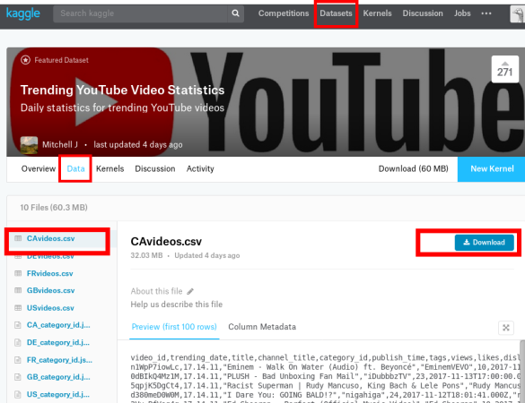

Idee per progetti¶
Ultimo aggiornamento: 31 Agosto 2018
Introduzione¶
In questa pagina sono raccolte idee per progetti che potresti fare. Sono solo spunti, quindi sentitivi liberi di modificarli a piacere. Riteniamo che imparare Python possa essere molto più interessante se si ha in mente un qualche esempio di analisi da replicare in Jupyter, anche in misura semplificata solo per provare.
Dataset da Kaggle¶
Area di interesse: tutte !
Kaggle è il sito di riferimento per data scientists, ricco di dataset e spunti interessanti ben categorizzati (per scaricare i dataset occorre registrarsi). Dategli un’occhiata perchè merita:
https://www.kaggle.com/datasets
Alcuni aree presenti tra le 1000:
Si può semplicemente usare il sito come fonte dati, oppure seguire le sfide proposte: prendendo per esempio le recensioni, si potrebbe scrivere un programmino rudimentale che cerca di capire se una recensione Amazon è positiva guardando se contiene le parole ‘bello/a’, ‘fantastico/a’, e poi confrontare i risultati con il numero di stelle che l’utente ha assegnato all’articolo per vedere quanto concordano.
Qua sotto riportiamo come prendere da Kaggle per esempio il CSV dei video trending di YouTube che contengono cose tipo i like, la descrizione, il numero di commenti etc :

Analisi dati socio-economici GapMinder¶
Area di interesse: sociologia, economia
Il progetto GapMinder mira a ridurre l’ignoranza globale proponendo strumenti online di facile utilizzo per analizzare dati statistici su indicatori quali per esempio il reddito pro-capite per nazione, la diffusione delle malattie, i flussi migratori, etc. Si potrebbero quindi creare in Jupyter delle interfacce che riproducano in qualche modo i grafici di GapMinder.

Come dati, si potrebbero scaricare manualmente due-tre dataset da questa lista e mostrarli in un grafico creato con matplotlib (vedere tutorial SoftPython visualizzazione dati)
aggiungere un widget selettore (vedere tutorial interfacce grafiche SoftPython) per filtrare i paesi da mostrare nel grafico, sullo stile dell’esempio Wealth of Nations di Bqplot
aggiungere uno slider per permettere all’utente di variare l’anno della visualizzazione
supportare altri tipi di visualizzazioni, per esempio mappe
aggiungere un selettore per poter scegliere il tipo di grafico da visualizzare
Altre fonti dati¶
Analisi quotazioni di borsa¶
Area di interesse: economia
Visualizzare in Jupyter grafici sull’andamento di valute e serie storiche macroeconomiche presi da
Alpha Vantage(https://www.alphavantage.co/): per le serie storiche dei prezzi dei titoli finanziari
FRED (https://fred.stlouisfed.org/): per le serie storiche economiche (macroeconomiche) USA

Per entrambi i siti è richiesta una key per scaricare i dati. Queste sono ottenibli gratuitamente dopo essersi registrati
L’utilizzo dei dati provenienti da Alpha Vantage è libero, viene solo limitata la frequenza delle richieste (quindi mettete delle attese programmate tra uno scaricamento e l’altro). Invece l’utilizzo dei dati provenienti da FRED è soggetto a dei specifici termini d’uso (https://research.stlouisfed.org/fred_terms.html) I dati scaricati sono di volta in volta decisi dall’utente che deve specificare le sigle del titolo (ES: AAPL (Apple), MSFT (Microsoft), GE (General Electric), ^GSPC (S&P 500)) oppure della variabile economica (ES: BAA ( Moody’s Seasoned Baa Corporate Bond Yield), GDPCA (Real Gross Domestic Product), CPIAUCSL (Consumer Price Index for All Urban Consumers: All Items)) che vuole analizzare. Le dimensioni dei file scaricati sono variabili.
I dati scaricati (ultimi 100 dati giornalieri) da Alpha Vantage sono in formato csv con al seguente struttura (intestazione ed esempio riga):
timestamp, open, high, low, close, adjusted_close, volume, dividend_amount, split_coefficient
2018-02-02, 166.0000, 166.8000, 160.1000, 160.5000, 160.5000, 85437085, 0.0000, 1.0000
Ad eccezione di ‘timestamp’ che indica la data dei dati di riga, i restanti valori sono numeri che rappresentano ad esempio il prezzo di apertura, chiusura, chiusura aggiustato, volumi scambiati, ecc.
I dati scaricati (l’intera serie storica dei dati annuali, è possibile modificare eventualmente la frequenza modificando opportuamente l’url) da FRED sono in formato xml con al seguente struttura:
<observations realtime_start="2018-02-06" realtime_end="2018-02-06" observation_start="1600-01-01" observation_end="9999-12-31" units="lin" output_type="1" file_type="xml" order_by="observation_date" sort_order="asc" count="88" offset="0" limit="100000">
<observation realtime_start="2018-02-06" realtime_end="2018-02-06" date="1929-01-01" value="1066.782"/>
<observation realtime_start="2018-02-06" realtime_end="2018-02-06" date="1930-01-01" value="976.305"/>
Analisi quotazioni criptovalute¶
Area di interesse: economia
Visualizzare in Jupyter grafici sull’andamento di criptovalute presi da coinmarketcap.com
Esempio formato dati ottenibili:
Per altre API, vedere: https://coinmarketcap.com/api/
Creare in Jupyter un configuratore di widget (vedere tutorial interfacce grafiche SoftPython), sull’esempio del *Cryptocurrency Price Ticker Widget*. L’output del programma dovrebbero essere oggetti widget Jupyter (non HTML).
Addizionalmente, il configuratore potrebbe anche generare del codice HTML come questo (per informazioni sull’HTML, vedere tutorial estrazione dati SoftPython):
<script type="text/javascript"
src="https://files.coinmarketcap.com/static/widget/currency.js">
</script>
<div class="coinmarketcap-currency-widget"
data-currencyid="1"
data-base="USD"
data-secondary=""
data-ticker="true"
data-rank="true"
data-marketcap="true"
data-volume="true"
data-stats="USD"
data-statsticker="false">
</div>
Il codice HTML può essere creato come oggetti BeautifulSoup o anche come semplice concatenazione di stringhe
Notate che se in una cella di Jupyter si scrive all inizio %%HTML e sotto si incolla il codice HTML come quello sopra, dovrebbe apparire qualcosa come questo:
[1]:
%%HTML
<script type="text/javascript"
src="https://files.coinmarketcap.com/static/widget/currency.js">
</script>
<div class="coinmarketcap-currency-widget"
data-currencyid="1"
data-base="USD"
data-secondary=""
data-ticker="true"
data-rank="true"
data-marketcap="true"
data-volume="true"
data-stats="USD"
data-statsticker="false">
</div>
Frequenza parole articoli Wikipedia¶
Area di interesse: lettere e filosofia, storia
Riportare in Jupyter la frequenza di parole da articoli presi da Wikipedia. A breve verranno aggiunti dettagli!
Filosofi influenti¶
Area di interesse: Lettere e Filosofia, Storia
Tutti conosciamo Wikipedia, l’enciclopedia online creata da volontari di tutto il mondo. In Wikipedia a volte alcune informazioni sono semistrutturate, come per esempio gli infobox. Vediamone uno per il filosofo Parmenide. Dall’infobox della versione inglese si può notare che è presente il campo ‘influenced’, che ci dice chi ha influenzato Parmenide:

Sarebbe interessante estrarre queste informazioni per fare per esempio grafici che mostrino i legami di chi ha influenzato chi nel corso della storia, tenendo naturalmente presente il fatto che Wikipedia non è sempre completa e al 100% affidabile. Questo è un esempio:

Cose che si potrebbero fare:
mostrare grafo dei filosofi
creare un widget selettore, in qui si seleziona un pensatore e vengono mostrati in una lista i pensatori che ha influenzato
mostrare chi non ha influenzato nessuno (secondo Wikipedia !). Se un personaggio è un filosofo famoso dovrà pur aver influenzato qualcuno quindi potremmo creare uno strumento che mostri a potenziali contributori di Wikipedia pagine di filosofi che necessitano ulteriori informazioni.
altri dettagli verranno aggiunti a breve !
Formato file filosofi:
Il dataset è stato ottenuto con questa query SPARQL su dbpedia . Per ottenere un file processabile in Python con gli strumenti che affronteremo durante il corso, si può richiedere un file JSON con query sparql su dbpedia, formato json
Riportiamo qua un estratto del file:
{
"head": {
"link": [],
"vars": ["p", "influenced"]
},
"results": {
"distinct": false,
"ordered": true,
"bindings": [
{
"p": {
"type": "uri",
"value": "http://dbpedia.org/resource/Parmenides"
},
"influenced": {
"type": "uri",
"value": "http://dbpedia.org/resource/Socrates"
}
},
{
"p": {
"type": "uri",
"value": "http://dbpedia.org/resource/Socrates"
},
"influenced": {
"type": "uri",
"value": "http://dbpedia.org/resource/Aristotle"
}
},
ETC... TAGLIATA ......................
}
Possiamo ignorare
{
"head": {
"link": [],
"vars": ["p", "influenced"]
},
"results": {
"distinct": false,
"ordered": true,
e concentrarci sulla parte che ci interessa, che è quella sotto results["bindings"] e vediamo essere distinta da una sequenza di oggetti contenenti ciascuno un riferimento ad un filosofo e un riferimento ad un’altro filosofo che è stato influenzato dal primo. In questo caso è riportato che Parmenide ha influenzato Socrate:
{
"p": {
"type": "uri",
"value": "http://dbpedia.org/resource/Parmenides"
},
"influenced": {
"type": "uri",
"value": "http://dbpedia.org/resource/Socrates"
}
},
In particolare in questo caso Parmenide è identificato dall’ indirizzo http://dbpedia.org/resource/Parmenides (provate a cliccarci sopra per vedere cosa DBpedia contiene su Parmenide ) e il personaggio Socrate viene esplicitato dall’indirizzo http://dbpedia.org/resource/Socrates (di nuovo provate a cliccarci sopra)
Personaggi culturalmente importanti¶
Pantheon è un progetto online per aiutare a comprendere il processo di sviluppo culturale globale. Il progetto consisterebbe nel ricreare in fogli Jupyter alcune delle visualizzazioni presenti sul sito di Pantheon, come per esempio questa:

In particolare, vengono offerti tre dataset estratti da Wikipedia con cui sono state realizzate le visualizzazioni online.
visualizzazione scatterplot che compara domini per rispondere a domande tipo “Quali luoghi di nascita hanno prodotto personalità nei campi dell’economia e della medicina?”.
altri dettagli verranno aggiunti a breve
Analisi attività parlamento¶
Area di interesse: Giurisprudenza
Open Parlamento, uno strumento di OpenPolis, contiene una quantità di informazioni e statistiche sull’operato dei nostri parlamentari:

Qua troviamo un esempio per il Partito Democratico:
https://parlamento17.openpolis.it/lista-dei-parlamentari-in-carica/camera/nome/asc/filter_group/71
L’obiettivo del progetto sarebbe replicare parte dei contenuti del sito in Jupyter. Per ottenere i dati, si può usare la comoda API fornita da OpenPolis all’indirizzo api3.openpolis.it
Vediamo per esempio come ottenere i gruppi parlamentari:
Notate che nella URL di sopra il parlamento17 all’inizio indica la diciassettesima legislatura (la corrente nel 2018) e il 71 alla fine, che è il codice assegnato al partito. I codici li potete ottenere con le API di OpenPolis. Per vedere quale codice numerico è assegnato ai vari gruppi parlamentari, guardate qua (il /17/ indica sempre la 17esima legislatura ):
http://api3.openpolis.it/parlamento/17/groups
Se andate col browser a questa URL sopra, dovreste vedere qualcosa di simile - nell’interfaccia web potete comodamente navigare le api e vedere i risultati delle chiamate, che sono sempre in formato JSON:

Per integrare dati con altre fonti, potreste scaricare delle pagine HTML da siti di news a tema politica, estrarre nomi di partiti politici e visualizzare in interfacce grafiche in Jupyter dei link a corrispondente pagine dei politici in OpenParlamento. Notate che negli articoli i nomi dei partiti potrebbero essere leggermente diversi o sigle (es. ‘PD’,’Lega’ invece di ‘Lega Nord’), quindi potreste implementare delle funzioni che cercano di identificare il partito.
Come altri esempi, potreste mostrare i parlamentari del gruppo. Questa API prende i parlamentari del Partito Democratico (
group=71) per la 17esima legislatura (/17/):
http://api3.openpolis.it/parlamento/17/parliamentarians?group=71&page=1
Vengono ritornati solo 25 risultati. per avere i 25 successivi, incrementare il numero assegnato alla page=1
Analisi attività parlamento: usare Wikidata per trovare i segretari di partito¶
Volendo, per trovare altre informazioni come i segretari di partito, potreste usare Wikidata.
Provate ad eseguire questa query SPARQL (per eseguirla online cliccate il bottone blue play in basso a sinistra, i risultati appariranno sotto): http://tinyurl.com/y8yel2mv
Non li dà tutti, ma per es. almeno Renzi e Salvini li trovate. Anche se non conoscete il linguaggio SPARQL, se provate a smanettare volendo potreste anche ricavare qualcosa in più, prendendo come esempio attributi da Partito Democratico e Renzi
Il seguente codice Python lo potete ottenere cliccando nel query editor cliccando in basso a destra->Code -> Python
#python3 -m pip install sparqlwrapper
#https://rdflib.github.io/sparqlwrapper/
from SPARQLWrapper import SPARQLWrapper, JSON
sparql = SPARQLWrapper("https://query.wikidata.org/sparql")
sparql.setQuery("""SELECT DISTINCT ?political_party ?political_partyLabel ?party_chief_representative ?party_chief_representativeLabel ?Openpolis_ID WHERE {
SERVICE wikibase:label { bd:serviceParam wikibase:language "[it],it". }
?political_party wdt:P31 wd:Q7278.
?political_party wdt:P17 wd:Q38.
OPTIONAL { ?political_party wdt:P210 ?party_chief_representative.
?party_chief_representative wdt:P1229 ?Openpolis_ID. }
}
LIMIT 500""")
sparql.setReturnFormat(JSON)
results = sparql.query().convert()
for result in results["results"]["bindings"]:
print(result)
Il codice Python vi stamperà qualcosa del genere:
{'political_party': {'value': 'http://www.wikidata.org/entity/Q286140', 'type': 'uri'}, 'political_partyLabel': {'value': 'Sinistra Ecologia Libertà', 'xml:lang': 'it', 'type': 'literal'}}
{'political_party': {'value': 'http://www.wikidata.org/entity/Q541679', 'type': 'uri'}, 'political_partyLabel': {'value': 'Democratici di Sinistra', 'xml:lang': 'it', 'type': 'literal'}}
{'political_party': {'value': 'http://www.wikidata.org/entity/Q662849', 'type': 'uri'}, 'political_partyLabel': {'value': 'Alleanza Nazionale', 'xml:lang': 'it', 'type': 'literal'}}
{'political_party': {'value': 'http://www.wikidata.org/entity/Q764125', 'type': 'uri'}, 'political_partyLabel': {'value': "Partito d'Azione", 'xml:lang': 'it', 'type': 'literal'}}
In particolare per il Partito Democratico e Renzi, formattandolo bene otterresti questo:
{
'political_party': {
'value': 'http://www.wikidata.org/entity/Q47729',
'type': 'uri'
},
'political_partyLabel': {
'value': 'Partito Democratico',
'xml:lang': 'it',
'type': 'literal'
},
'party_chief_representative': {
'value': 'http://www.wikidata.org/entity/Q47563',
'type': 'uri'
},
'party_chief_representativeLabel': {
'value': 'Matteo Renzi',
'xml:lang': 'it',
'type': 'literal'
},
'Openpolis_ID': {
'value': '6877',
'type': 'literal'
}
}
Interfacce e tecnologie per la comunicazione¶
Area di interesse: Interfacce e tecnologie per la comunicazione
Visualizzazione e analisi in Jupyter di risultati di esperimenti di HCI ?
Altri dettagli verranno aggiunti a breve.
Supply Chain¶
Area di interesse: Ingegneria industriale (DII)
Realizzare qualche interfaccia in Jupyter sul modello di questa: http://arcg.is/1Hm45L
I dati si possono prelevare da Kaggle , cercando dataset taggati supply chain

Tracciamento di oggetti astronomici¶
Area di interesse: Ingegneria industriale (DII), Ingegneria Civile ambientale (DICAM), Fisica, Matematica indirizzo didattico
Il progetto consiste nel realizzare in un foglio Jupyter un tracciatore di oggetti astronomici come satelliti, pianeti, auto Tesla… Come modello si può guardare l’ISS Tracker che segue la Stazione Spaziale Internazionale:

In Jupyter si potrebbe:
avere una barra di testo dove si immette l’ora (in alternativa si può usare uno slider)
da un menu drop-down, poter selezionare un qualche oggetto celeste, tipo ISS
usando i file del NORAD , mostrarne la posizione dell’oggetto selezionate su mappa terrestre in cella Jupyter
mostrare la posizione dell’oggetto su mappa celeste rispetto ad un punto d’osservazione, per calcolare la posizione esatta si può usare la libreria PyEphem, per qualche esempio vedere tutorial CoderDojo Trento
Dati AstroPI
Volendosi concentrare sulla Stazione Spaziale Internazionale (ISS), sarebbe interessante riutilizzare dati ambientali interni ed esterni raccolti sulla ISS per gli esperimenti AstroPI proposti da CoderDojo Trento in collaborazione con l’Agenzia Spaziale Europea e la Raspberry Foundation - per una presentazione molto generale vedere comunicato stampa.
Per le tempistiche, vedere timeline: correntemente (periodo Febbraio - Maggio 2018) gli esperimenti sono in fase di attuazione sulla ISS, e dati ‘freschi’ saranno scaricati dalla stazione entro il 10 Maggio 2018 ma sono disponibili anche dati da edizioni passate. In particolare per voi di interessante ci sono i due progetti presentati per la Mission Space Lab:
Progetto Team Lamponi - ISS Orbit
In questo progetto sono raccolte foto della Terra per calcolare la velocità della alla Stazione Spaziale Internazionale (ISS) in base a oggetti rilevati sul suolo, paragonandola alla velocità reale:
immagini esempio rilevanti ( sono ~161 metri per pixel)
Le serie completa di immagini da edizioni passate la trovate nel progetto del 2015 environ_pi - notare che trattandosi di esperimenti ‘alla buona’, si vedono i bordi dell’oblò e dei riflessi. In più in alcune immagini sono nere perchè riprese dal lato non illuminato dal Sole :
Progetto Trentini DOP - Space Pressure
In quest’altro vengono prese rilevazioni da sensori interni alla stazione, come pressione, temperatura, accelerazione, etc.
formato dati - NOTA: questi sono rilevati dalla scrivania :-)
Come esempio di dati veri da edizioni passate, puoi guardare il tutorial Pandas in SoftPython, in cui usiamo questi dati commentati di AstroPI
In base a quanto sopra, si potrebbe quindi:
mostrare dentro dei box testuali i parametri ambientali della stazione rilevati nell’istante più prossimo
in un altro riquadro, mostrare la foto ripresa nell’istante più vicino dalla ISS, oppure anche risultati dello stitching operato da OpenCV
mostrare velocità teorica in base a stitching e reale, con differenza in percentuale
se interessa, volendo si potrebbe fare più analisi delle immagini con OpenCV, tipo identificare solo le nuvole o capire se la ISS sta sorvolando il mare / terra / foreste …
{kind=link}
Ricerca sequenze numeri interi database OEIS¶
Area di interesse: Matematica
Un utile strumento a disposizione dei matematici è OEIS, l’enciclopedia online delle sequenze intere. Il sito permette di scrivere in input una sequenza di numeri interi come 1,2,3,6,11,23,47,106,235, e il sito proverà a ritornare delle ricorrenze numeriche che la generano, più altre informazioni come gli articoli scientifici che ne parlano:

Scrivo qua qualche spunto per il progetto:
fare dei widget in Jupyter che permettano all’utente di inserire una sequenza numerica, poi
con la libreria
requestspiegata in tutorial Integrazione dati SoftPython, chiamare le API di OEIS e ottenere dati sulla sequenza, in formato testuale nativo (più difficile da parsare) o JSON (più semplice)se si ottiene una ricorrenza, fare un plot dei punti precalcolati forniti
provare a fare un parser (anche con regex, vedere tutorial Ricerca in SoftPython) che estrae nomi di autore dalla sezione
referencese li visualizza in un widget (tipo unVBoxdiLabel):
"reference": [
"F. Bergeron, G. Labelle and P. Leroux, Combinatorial Species and Tree-Like Structures, Camb. 1998, p. 279.",
"N. L. Biggs et al., Graph Theory 1736-1936, Oxford, 1976, p. 49.",
"A. Cayley, On the analytical forms called trees, with application to the theory of chemical combinations, Reports British Assoc. Advance. Sci. 45 (1875), 257-305 = Math. Papers, Vol. 9, 427-460 (see p. 459).",
"S. R. Finch, Mathematical Constants, Cambridge, 2003, pp. 295-316.",
"J. L. Gross and J. Yellen, eds., Handbook of Graph Theory, CRC Press, 2004; p. 526.",
Esempi API OEIS¶
Esempio (tagliato) di dati già ben parsato in JSON: http://oeis.org/search?fmt=json&q=1,2,3,6,11,23,47,106,235
{
"greeting": "Greetings from The On-Line Encyclopedia of Integer Sequences! http://oeis.org/",
"query": "1,2,3,6,11,23,47,106,235",
"count": 1,
"start": 0,
"results": [
{
"number": 55,
"id": "M0791 N0299",
"data": "1,1,1,1,2,3,6,11,23,47,106,235,551,1301,3159,7741,19320,48629,123867,317955,823065,2144505,5623756,14828074,39299897,104636890,279793450,751065460,2023443032,5469566585,14830871802,40330829030,109972410221,300628862480,823779631721,2262366343746,6226306037178",
"name": "Number of trees with n unlabeled nodes.",
"comment": [
"Also, number of unlabeled 2-gonal 2-trees with n 2-gons.",
"Main diagonal of A054924.",
"Left border of A157905. - _Gary W. Adamson_, Mar 08 2009",
"From _Robert Munafo_, Jan 24 2010: (Start)",
"Also counts classifications of n items that require exactly n-1 binary partitions; see Munafo link at A005646, also A171871 and A171872.",
"The 11 trees for n = 7 are illustrated at the Munafo web link.",
Esempio (tagliato) di dati in formato interno: http://oeis.org/search?fmt=text&q=1,1,1,5,3,60,487
# Greetings from The On-Line Encyclopedia of Integer Sequences! http://oeis.org/
Search: seq:1,1,1,5,3,60,487
Showing 1-1 of 1
%I A007299 M3736
%S A007299 1,1,1,1,5,3,60,487,13710027
%N A007299 Number of Hadamard matrices of order 4n.
%C A007299 More precisely, number of inequivalent Hadamard matrices of order n if two matrices are considered equivalent if one can be obtained from the other by permuting rows, permuting columns and multiplying rows or columns by -1.
%C A007299 The Hadamard conjecture is that a(n) > 0 for all n >= 0. - _Charles R Greathouse IV_, Oct 08 2012
Per dettagli sul formato, vedere:
Se il parsing diretto non vi entusiasma, potete anche provare ad usare la libreria PyOEIS